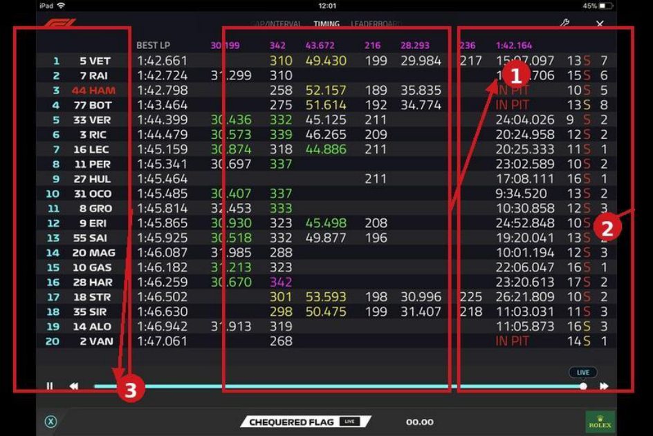
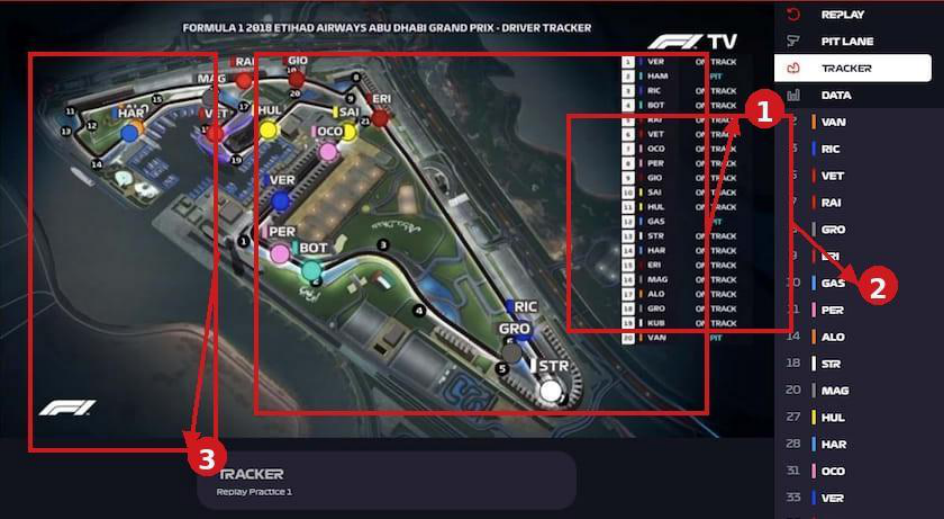
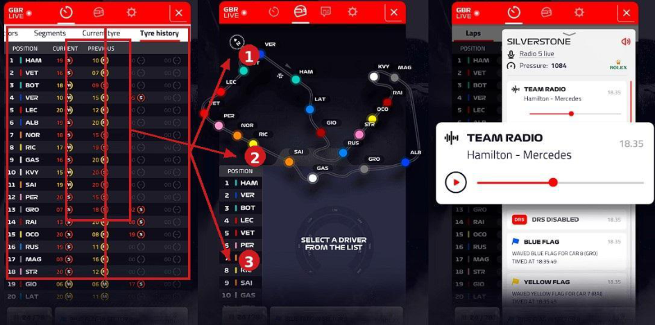
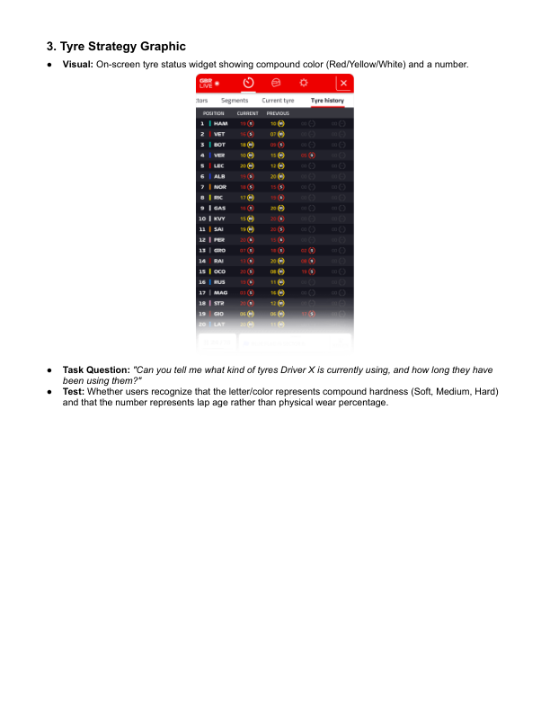
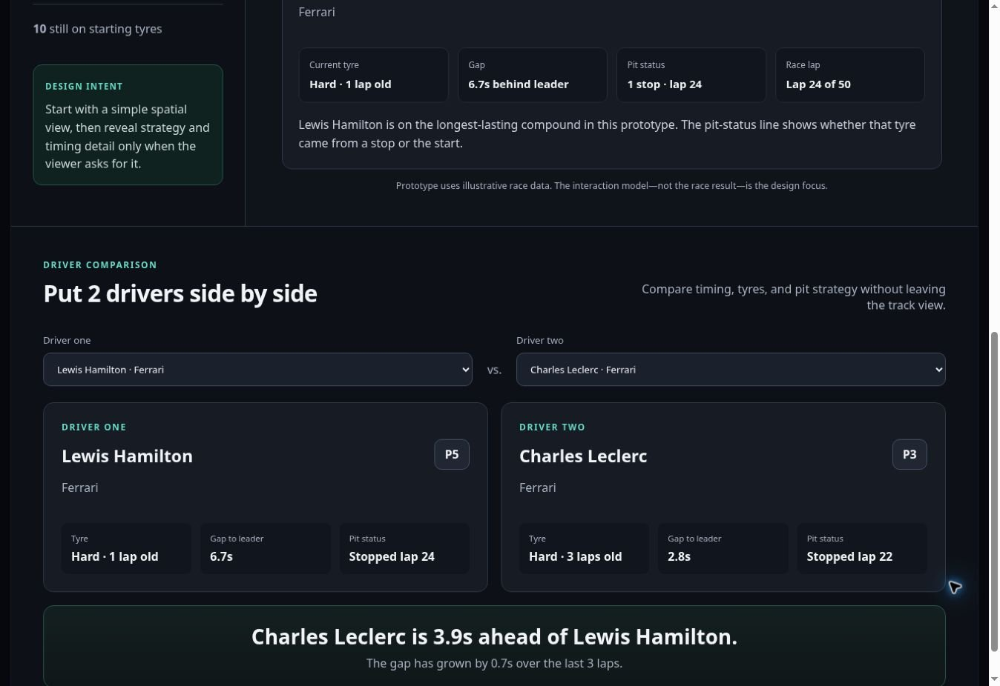

“+1.827” from what?
Gap to the leader and interval to the car ahead can look almost identical if the reference is not labeled.
An interactive F1 race replay designed around the questions new viewers actually ask.
The project began with a usability question: how do timing, tyres and a track map become understandable without knowing F1 shorthand first?
F1 broadcasts already show timing, tyres, positions, maps and race-control signals. The audit asked a narrower question: where does the interface assume knowledge a newer viewer may not have?
Gap to the leader and interval to the car ahead can look almost identical if the reference is not labeled.
Knowing that yellow means medium still does not tell a novice why tyre age matters or when a stop changes the race.
Pit cycles, lapped cars and different race positions can make spatial proximity misleading on its own.
Safety cars, blue flags and penalties need context; an icon alone can leave the viewer guessing what happens next.

The redesign labels the gap as seconds behind the leader instead of relying on a viewer to infer the reference. Driver names sit beside the three-letter codes so the timing view does not require memorizing the grid first.

The map stays useful for seeing where cars are, but Race Lens pairs it with running order and a selected-driver panel. Position, timing and tyre context explain why two nearby cars may—or may not—be fighting each other.

The driver panel combines the compound name, colour, age in laps and pit status. The point is not to teach tyre strategy in a paragraph; it is to put the information beside the moment when it matters.

Instead of asking “do you understand F1?”, the tasks isolate specific pieces of the broadcast language. That gave the redesign concrete targets: label the reference, pair colour with text, narrate recent changes and let detail appear when the viewer asks for it.
“Seconds behind leader” replaces an unlabeled number.
The viewer does not have to decode colour before understanding the situation.
The field view and timing view explain each other instead of competing.
Start with the race, then let a driver choice reveal the deeper detail.
Brought the field, race snapshot and driver detail into one replay concept.
Added continuous motion, a running-order wall and controls for following the race over time.
The wall pushed the track down and made the main visual harder to read, so the driver controls and running order moved beside the track instead.

Two driver selectors put timing, tyre compound, tyre age and pit state side by side, then summarize the gap in a sentence. The data and track geometry are illustrative; the prototype is testing the interaction model, not reproducing a real Grand Prix.
Changing the lap updates the SVG track, driver markers, running order, tyre state and comparison copy together. The result is a working interaction prototype that lets the research question be experienced instead of only described.